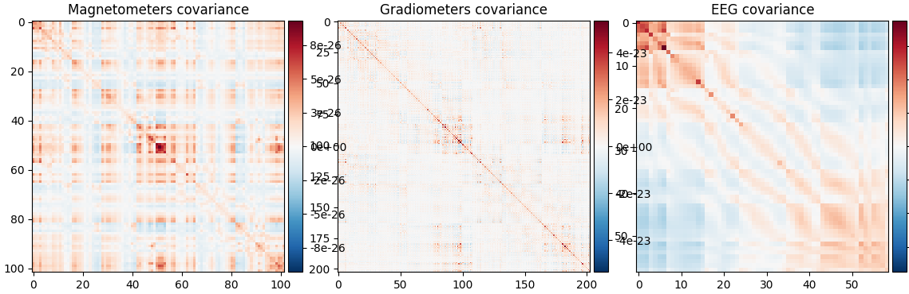
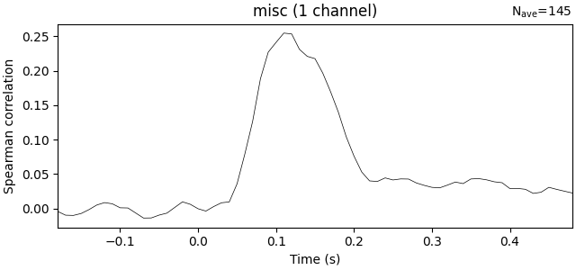

Note
Go to the end to download the full example code.
Sensor-level RSA using mixed sensor types#
This example demonstrates how to perform representational similarity analysis (RSA) on MEEG data containing magnetometers, gradiometers and EEG channels. In this scenario there are important things we need to keep in mind:
Different sensor types see the underlying sources from different perspectives, hence spatial searchlight patches based on the sensor positions are a bad idea. We will perform a searchlight over time only, pooling data from all sensors at all times.
The sensors have different units of measurement, hence the numeric data is in different orders of magnitude. If we don’t compensate for this, only the sensors with data in the highest order of magnitude will matter when compuring RDMs. We will compute a noise covariance matrix and perform data whitening to achieve this.
The dataset will be the MNE-sample dataset: a collection of 288 epochs in which the participant was presented with an auditory beep or visual stimulus to either the left or right ear or visual field.
# sphinx_gallery_thumbnail_number=2
# Import required packages
import mne
import mne_rsa
import numpy as np
mne.set_log_level(False) # Be less verbose
We’ll be using the data from the MNE-sample set.
sample_root = mne.datasets.sample.data_path(verbose=True)
sample_path = sample_root / "MEG" / "sample"
Creating epochs from the continuous (raw) data. We downsample to 100 Hz to speed up the RSA computations later on.
raw = mne.io.read_raw_fif(sample_path / "sample_audvis_filt-0-40_raw.fif")
events = mne.read_events(sample_path / "sample_audvis_filt-0-40_raw-eve.fif")
event_id = {"audio/left": 1, "visual/left": 3}
epochs = mne.Epochs(raw, events, event_id, preload=True)
epochs.resample(100)
Plotting the evokeds for each sensor type. Not the difference in scaling of the values (=the y-limits of the plot).
epochs.average().plot()
<Figure size 640x500 with 6 Axes>
To estimate the differences in signal amplitude between the different sensor types, we compute the (co-)variance during a period of relative rest in the signal: the baseline period (-200 to 0 milliseconds). See MNE-Python’s covariance tutorial for details.
noise_cov = mne.compute_covariance(
epochs, tmin=-0.2, tmax=0, method="shrunk", rank="info"
)
noise_cov.plot(epochs.info)
- 
(<Figure size 1140x370 with 6 Axes>, <Figure size 1140x370 with 3 Axes>)
Now we compute a reference RDM (simply encoding visual vs audio condition) and RSA it against the sensor data, which we will do in a sliding window across time.
# Sort the epochs by condition
epochs = mne.concatenate_epochs([epochs["audio"], epochs["visual"]])
# Compute model RDM
model_rdm = mne_rsa.compute_rdm(epochs.events[:, 2], metric=lambda a, b: a[0] != b[0])
mne_rsa.plot_rdms(model_rdm)
# Perform RSA across time
rsa_scores = mne_rsa.rsa_epochs(
epochs,
model_rdm,
noise_cov=noise_cov,
temporal_radius=0.02,
y=np.arange(len(epochs)),
n_jobs=1, # Use this to specify the number of CPU cores to use.
)
rsa_scores.plot(units=dict(misc="Spearman correlation"))
- 
<Figure size 640x300 with 1 Axes>
Total running time of the script: (0 minutes 22.867 seconds)